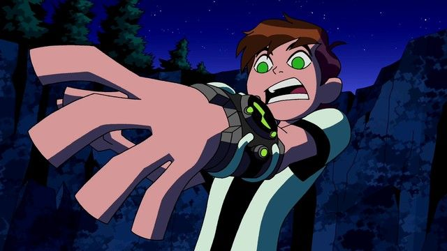
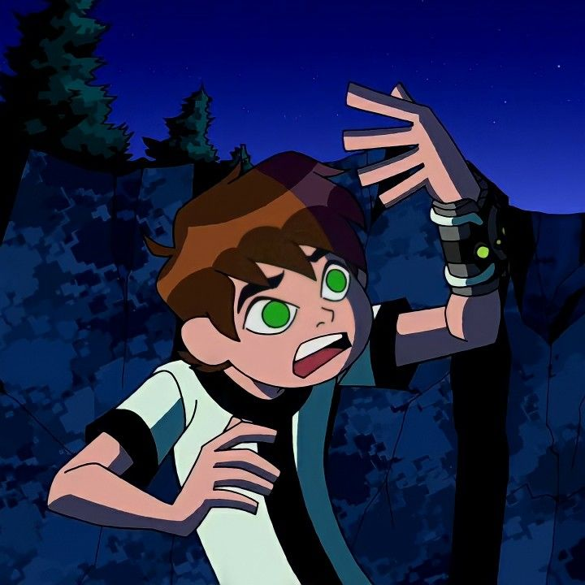

|  | |
ComeçoA história de Ben 10 gira em torno de um garoto chamado Ben Tennyson, que descobre um dispositivo alienígena chamado Omnitrix. O Omnitrix permite que Ben se transforme em diferentes formas de alienígenas, cada uma com habilidades especiais. No início, Ben vê o Omnitrix como uma oportunidade para se divertir e se exibir, mas logo percebe que tem a responsabilidade de usar seus poderes para proteger a Terra de ameaças alienígenas e criminosos intergalácticos. |
 |
|
Ao longo da série, Ben, Gwen e Max embarcam em diversas aventuras enquanto enfrentam ameaças alienígenas e criminosos intergalácticos. Ben descobre que o Omnitrix é um artefato poderoso e cobiçado por muitos, incluindo vilões alienígenas e uma organização secreta chamada Caçadores de Recompensas. Enquanto enfrenta essas ameaças, Ben vai aprendendo a usar as diferentes formas alienígenas do Omnitrix de maneira estratégica, além de desenvolver suas habilidades de luta e trabalho em equipe. Ele também descobre segredos sobre a origem do Omnitrix e sua conexão com outros seres alienígenas. Ao longo das várias temporadas da série, Ben 10 ganhou diversas continuações e spin-offs, ampliando ainda mais o universo dos personagens e aventuras. O início de Ben 10 estabeleceu as bases para essa franquia de sucesso, apresentando um garoto com poderes alienígenas e sua jornada para se tornar um herói. |
|
|
Gustavo Henrique A. dos Santos - 2023 |
|